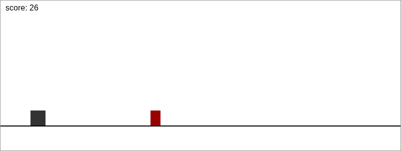
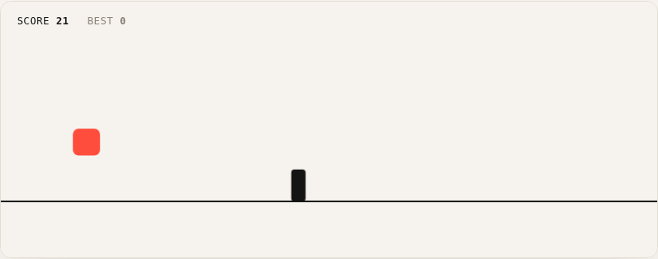

A small reflex game built to practice game feel — tuning jump physics, difficulty pacing, and feedback until a single button press feels satisfying. Meant as a bridge project before moving into Unity.
RoleDesigner & Builder
Duration~4 Days
ToolsCanvas, vanilla JavaScript
TypeSelf-directed
01 / Overview
Problem
My first two projects were about screens — layouts, states, static flows. I wanted to try something where the entire "interface" is a single input, repeated fast, and see how much of the design work happens in tuning feel rather than laying anything out.
Goal
Build a one-button dodge game where the core loop — jump, dodge, fail, retry — feels fair and satisfying, not just functional. The mechanic itself (jump over obstacles) is intentionally simple; the actual design problem is making that simple thing feel good.
02 / Before & After
Same mechanics, different feel
I built the bare mechanics first — collision detection, gravity, obstacle spawning — with no polish at all, on purpose. That gave me an honest baseline to compare against once I started tuning.

Before — bare mechanics, plain shapes, default font

After — tuned physics, real visual identity, HUD
03 / Decision Log
What I changed, and why
Asymmetric gravity (falls faster than it rises)
the v1 jump used one constant gravity value and felt floaty and unresponsive. Making the fall heavier than the rise reads as snappier without changing the jump height.
Squash-and-stretch on takeoff and landing
a jump with no deformation felt stiff, even once the physics were right. A quick stretch on takeoff and squash on landing sells weight and impact with almost no extra code.
Randomized obstacle gaps with a safety floor
fixed-interval spawning in v1 felt like a metronome — predictable in a boring way, not a skillful way. Randomizing the gap (but never below what's survivable at the current speed) keeps it unpredictable without being unfair.
Stepped, capped difficulty ramp
speed increasing forever eventually makes the game impossible regardless of skill. Capping it means the ceiling is reaction time, not an arbitrary wall.
Near-miss particle spark
clearing an obstacle by a wide margin and clearing it by a pixel felt identical. A small spark on a close call rewards precision the mechanics don't otherwise acknowledge.
Screen shake + particle burst on death
the v1 game just froze on collision, which felt like a bug, not an ending. A short shake and burst makes failure read as an event instead of the game silently stopping.
Instant restart on the same input as jump
any menu or confirmation step between failing and retrying kills momentum in a game this short. Space/click does double duty as jump and restart.
Persistent best score
a single run has no stakes on its own. Saving your best locally gives every retry a reason to exist beyond "try again."
04 / The Code
A few pieces worth showing
Most of the "design" in this project happened here, not in Figma — small numeric tweaks tested by playing the result over and over. A couple of the more interesting pieces:
Asymmetric gravity — the fall pulls harder than the rise, which is what makes the jump read as snappy instead of floaty:
dodge-game.html
player.vy += player.vy < 0 ? 0.62 : 0.78;
player.y += player.vy;
// rising uses the lighter value, falling uses the heavier one —
// same jump height, but the descent feels more responsive
Near-miss detection — checked the moment an obstacle passes the player, not on every frame, to keep it cheap:
dodge-game.html
if(!o.passed && o.x+o.w < player.x){
o.passed = true;
const gap = player.x - (o.x+o.w);
if(gap < 26) burst(player.x+player.w/2, player.y+player.h/2, '#ffb199', 6);
}
// a close clearance (under 26px) fires a small spark —
// purely a feel reward, has no effect on score or difficulty
Randomized, safety-floored spawn timing — the part that stopped the game from feeling like a metronome:
dodge-game.html
const minGap = 55 + speed*3;
nextSpawnAt = frame + minGap + Math.random()*40;
// the floor scales with current speed, so gaps never get
// unfairly tight even as the game speeds up
Fair, not randomDifficulty should come from speed and timing, never from an unwinnable obstacle pattern.
Forgiving to retryLosing should take you back into a run in under a second — no menus, no friction.
Readable at a glanceScore, best score, and game state should be understandable without reading anything twice.
A visual identity of its ownDistinct from my other two projects — warm, minimal, and built around a single accent color instead of borrowing the portfolio's palette.
06 / Reflection
What I learned
Almost none of the actual design work here happened in a design tool — it happened in small numeric tweaks to gravity, timing, and particle counts, then playing the result over and over to see if it felt right. That's a different kind of iteration than I'm used to, and it's exactly the kind of loop I expect to be living in once I move into Unity.
I haven't had other people playtest this yet — everything so far is based on my own repeated runs, which is a real limitation. The obvious next step is putting it in front of a few friends and watching where they actually die, rather than guessing from my own play.
Key Takeaways
First project where the "design" work was mostly numeric tuning, not layout
Learned how small physics choices (asymmetric gravity, squash/stretch) change how fair or responsive something feels
Built a full loop — start, fail, retry, persistent score — with zero external libraries
Still need real playtesting beyond my own runs before I'd call the difficulty curve done